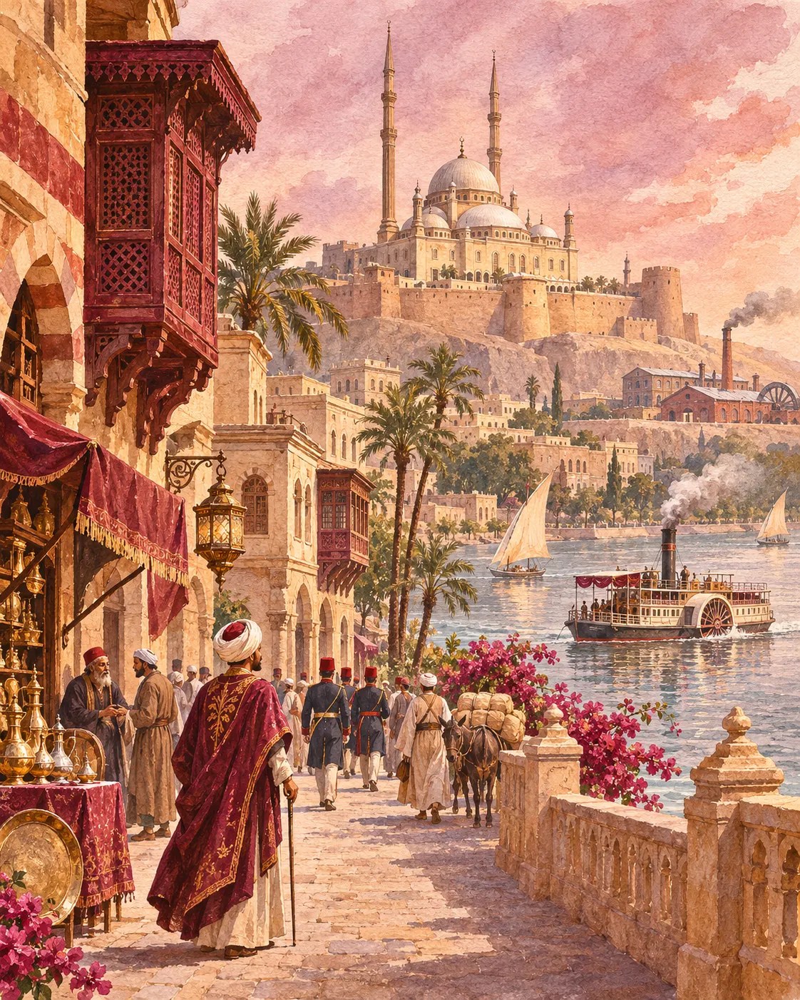

من نهاية دولة المماليك إلى نهضة محمد علي صدمة الحداثة، وقناة السويس، وتاريخ القصور الخديوية والمملكة
يبدأ المقرر بأحوال مصر تحت حكم المماليك وصعود الدولة العثمانية، ثم يتناول السيطرة العثمانية، والحملة الفرنسية، والتحولات التي مهّدت لصعود محمد علي وبناء الدولة الحديثة. ويمتد إلى عصر الخديوي إسماعيل وقناة السويس والحركة الوطنية، مع ربط الأحداث بالمواقع والآثار التي يشرحها المرشد السياحي.

للاستزادة: ملخص المرشد السياحي بالإنجليزية
Modern Egypt: Bridging History & Guided Sightseeing
For foreign tourists visiting Cairo and Alexandria, Modern Egyptian History is ubiquitous—visible in the grand Belle Époque boulevards of Downtown Cairo, the majestic halls of Abdeen Palace, the Manial Palace of Prince Mohamed Ali Tewfik, the Citadel's Alabaster Mosque, and the legendary waters of the Suez Canal.
The course opens with Mamluk Egypt and the Ottoman conquest of 1516–1517, then follows Ottoman rule, the French expedition of 1798, and the rise of Muhammad Ali Pasha (1805–1848). Later topics connect state building, the Suez Canal, and the national movement to the historic places that visitors encounter today.
محاضرات مقرر تاريخ مصر الحديث والمعاصر
منهج قسم الإرشاد السياحي المعتمد بجامعة 6 أكتوبر
السيطرة العثمانية على مصر وسقوط المماليك (1516–1517م)
THE OTTOMAN CONQUEST & FALL OF THE MAMLUKS
مصر قبيل العثمانيين، المماليك البحرية والبرجية، أسباب الضم الستة، معركة مرج دابق بالشام، معركة الريدانية واستشهاد طومان باي على باب زويلة.
أحوال مصر أثناء الحكم العثماني (النظم والمجتمع والفكر)
EGYPT UNDER OTTOMAN RULE: GOVERNANCE & SOCIETY
الوالي والديوان وقانون نامة 1525م، الأوجاقات السبعة للحامية، تدهور الزراعة والصناعة وترحيل الحرفيين، هرم الطبقات الثلاث، وأعلام التأريخ (ابن إياس، الجبرتي، والزبيدي).
حركة علي بك الكبير الاستقلالية (1768–1773م)
ALI BEY AL-KABIR'S INDEPENDENCE BID
مشيخة البلد، كسر قبائل الهوارة والشيخ همام، طرد الباشا، ضم الحجاز والشام، التحالف مع أسطول روسيا، وخيانة أبو الدهب ومعركة الصالحية.
الحملة الفرنسية في مصر (1798–1801م)
THE FRENCH EXPEDITION: INVASION & RESISTANCE
أوضاع ما قبل الحملة، أسباب الغزو الستة، من الفكرة إلى التنفيذ، إنزال الإسكندرية واستشهاد محمد كريم، شبراخيت وإمبابة، كارثة أبي قير، وصمود الصعيد لعشرة أشهر.
مصر من المقاومة الشعبية حتى رحيل الحملة (1798–1801م)
POPULAR RESISTANCE & EXPULSION OF THE FRENCH
ثورتا القاهرة (الأزهر وبولاق)، مقتل ديبوي وسولكوسكي، اتفاقية العريش وموقعة عين شمس، تدمير بولاق واغتيال كليبر، قيادة مينو ومعركة كانوب 1801م، وضياع حجر رشيد.
مصطفى كامل ومحمد فريد ومقاومة الاحتلال
تأسيس جريدة اللواء والحزب الوطني، حادثة دنشواي 1906م وإقالة اللورد كرومر، ونضال محمد فريد ودور الحركة الطلابية والعمالية.
ثورة 1919 والمملكة المصرية ودستور 1923
سعد زغلول والوفد المصري، الوحدة الوطنية وهلال مع صليب، تصريح 28 فبراير 1922، وإعلان استقلال مصر وتتويج الملك فؤاد الأول.
معالم وقصور مصر الحديثة في مسار الإرشاد
قصر عابدين، قصر المنيل، قصر محمد علي بشبرا، قصر البارون إمبان، متحف المركبات الملكية، ومتحف الخزف الإسلامي.